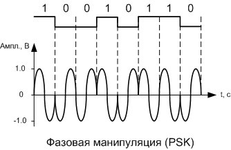

При фазовой манипуляции каждому цифровому символу сопоставляется своя начальная фаза несущего сигнала при неизменной амплитуде. Данный вид манипуляции наиболее сложен в реализации.
На рисунке ниже приведен график двоичной бинарной последовательности нулей и единиц и, соответствующий ему, график фазо-манипулированного сигнала. Низкому уровню бинарного сигнала сопоставляется начальная фаза 180 градусов, высокому уровню – фаза 0 градусов несущего сигнала синусоидального типа.
Таким образом, одни из ФМн колебаний будут синфазны с колебаниями несущей, а другие противоположны по фазе на 180˚.
Одним их основных недостатков фазовой манипуляции является эффект "обратной работы" в фазовом детекторе (устройстве, выделяющем из манипулированного сигнала информационный), когда ошибка в одном символе может привести к ошибочному детектированию всех последующих символов. Вторым существенным недостатком фазовой манипуляции является необходимость широкой полосы пропускания для передачи фазоманипулированного сигала, это обусловлено расширением спектра из-за резких переходов между фазой предыдущего и последующего символа.
На практике часто применяются не обычная ОФМ, а ДОФМ (двойная относительная фазовая манипуляция) или ТОФМ (тройная относительная фазовая манипуляция). Главное их преимущество – это возможность передать в одной посылке сигнала сразу два информационных символа для ДОФМ и три – для ТОФМ. Это достигается за счет использования не 2, а 4 или 8 начальных фаз.
Наиболее применяется фазовая манипуляция в системах связи исключительно за счет низкой доли фазовых помех в общей доле нежелательных внешних воздействий.